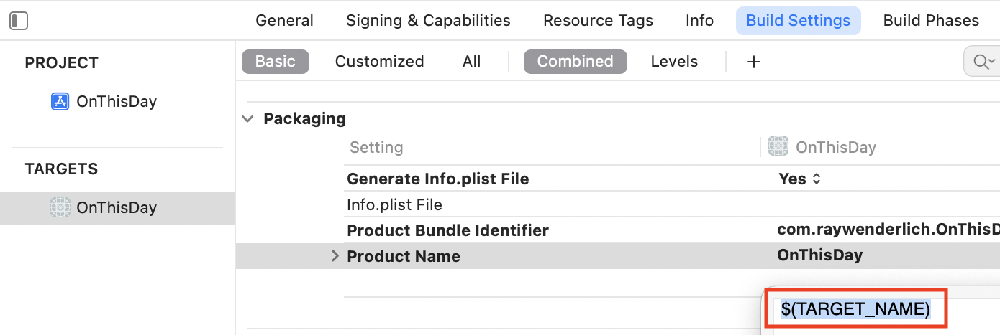

5.设置首选项和图标¶
完成上一章后，你的应用程序就完成了功能。它可以下载今天或选定日期的事件。它以两种不同的格式显示这些事件，并允许搜索和排序。它还会显示已下载数据的日子的列表，因此你可以在它们之间进行交换。
在这一章中，你将添加最后的修饰，使你的样本应用程序成为一个可以分发的真正的应用程序。
首先，你将了解应用程序的首选项以及如何添加首选项窗口。接下来，你将更新应用的名称并添加一个应用图标。你需要什么图片尺寸的图标？你应该如何设计图标？
最后一项任务是在Xcode为每个Mac应用程序创建的关于框中添加您自己的信息。
首选项¶
几乎所有的macOS应用都有一个首选项窗口，它们总是以同样的方式被访问：通过应用菜单中的Preferences...菜单项或使用Command-,快捷方式。
如果你写一个带有用户设置的iOS应用，你有两个选择。你可以在你的应用程序中创建你自己的设置视图，或者你可以挂钩到iOS设置应用程序，在那里显示你的应用程序的选项。
对于一个macOS应用，你几乎总是要创建自己的设置视图。有些应用程序会在系统偏好中添加一个窗格，但这些都是深入嵌入系统的应用程序，如鼠标驱动程序或文件系统实用程序。
创建一个偏好设置视图¶
打开你在前一章所做的应用程序项目，或者下载本章的资料，打开starter项目。
在Views组中，添加一个新的SwiftUI View文件，并将其称为PreferencesView.swift。暂时保留默认的"Hello, World!"文本，但添加这个尺寸修改器：
.frame(width: 200, height: 150)
这将确保窗口足够大，以便你在测试时看到。
接下来，你将把这个视图连接到Preferences...菜单项。打开OnTheDayApp.swift。现在，主体包含一个WindowGroup及其内容和一个commands修改器。你将会添加第二个场景。
在commands修改器的末尾，添加这个：
Settings {
PreferencesView()
}
这告诉应用程序，除了有一个WindowGroup场景之外，它现在还有一个Settings场景。当你给Settings一个视图时，SwiftUI将设置一个Preferences...菜单项，并在用户选择该菜单项或按其键盘快捷键时处理显示你的视图。
构建并运行该应用程序。打开OnThisDay菜单，使用新的Preferences...菜单项来打开你的偏好窗口：
这个窗口有几个有趣的地方，使它与你迄今为止在这个应用程序中所打开的其他窗口不同：
- 你不能打开这个窗口的一个以上的副本。你可以随心所欲地创建主应用程序窗口的多个实例，但偏好窗口只能打开一次。选择菜单项来打开窗口，点击主窗口，然后按
Command-,。已经打开的首选项窗口会出现在前面，但仍然只有一个。 - 它有一个预设的标题：
OnThisDay Preferences，但这个标题太长了，不能放在窗口里。要覆盖它，请在PreferencesView.swift中的frame修改器之后添加这个修改器：
.navigationTitle("Settings")
- 最大化和最小化按钮是灰色的，而不是绿色和黄色的。这是因为你为视图设置了一个固定的尺寸。在
ContentView.swift中，你为主窗口设置了一个灵活的框架，但是Preferences窗口会有固定的内容，所以固定的尺寸是可以的。
添加标签¶
Mac应用程序可以有很多设置，尤其是比较复杂的应用程序。为了使这些设置不那么混乱，一个非常常见的设计模式是将设置分成几组，并使用标签来显示每组。Xcode是这方面的一个很好的例子：
OnThisDay不是一个非常复杂的应用程序，它不需要很多设置，但你要使用这个标签式界面，因为它有一些你需要注意的奇怪之处。
在PreferencesView.swift中，用Text代替：
// 1
TabView {
// 2
Text("Tab 1 content here")
// 3
.tabItem {
Image(systemName: "checkmark.circle")
Text("Show")
}
// 4
Text("Tab 2 content here")
.tabItem {
Image(systemName: "sun.min")
Text("Appearance")
}
}
这又有什么作用呢？
- 创建一个
TabView来设置标签式界面。 - 为第一个标签设置内容--目前是一个
Text占位符。 - 添加将显示在顶部的
tabItem，使用SF符号中的Image和Text视图。 - 对第二个标签重复上述步骤。
恢复预览，看看你的标签：
这里没有什么令人惊讶的地方；这看起来就像一组标准的Mac标签。但你可能想知道为什么每个tabItem里都有一张图片，而标签却小得不能显示。
构建并运行该应用程序，打开偏好窗口，看看会发生什么：
标签完全不同了，现在你可以看到图片了。另外，窗口的标题显示了所选标签的标题。这是首选项窗口与普通窗口不同的另一种方式。
因此，预览对于在首选项窗口中处理标签没有好处，但在设计标签内容时，它仍然有用。
设置Show选项¶
第一个标签是Show标签，它的选项将控制你在应用程序中看到的内容。你已经有了切换Show Totals的能力，你将在这里包括这个功能，但你将添加其他控件来显示或隐藏某些类别的事件。
为了保持TabView的简单性，并避免Pyramid of Doom，在文件的最后为PreferencesView.swift添加一个新的结构：
// 1
struct ShowView: View {
// 2
@AppStorage("showBirths") var showBirths = true
@AppStorage("showDeaths") var showDeaths = true
@AppStorage("showTotals") var showTotals = true
// 3
var body: some View {
// 4
VStack(alignment: .leading) {
Toggle("Show Births", isOn: $showBirths)
Toggle("Show Deaths", isOn: $showDeaths)
Toggle("Show Totals", isOn: $showTotals)
}
}
}
踏过这个，你：
- 初始化一个新的
SwiftUI视图。 - 声明三个
@AppStorage属性。你已经使用过showTotals，但另外两个是新的。 - 添加一个
body，就像任何SwiftUI视图一样。 - 在
body中，使用一个VStack，包含三个Toggle视图。每个toggle被绑定到一个@AppStorage属性。
Note
厄运金字塔是一个用来指深度嵌套代码的短语，它最终会在最后形成一个巨大的金字塔式的闭合括号。
你已经看到，预览对于预览标签没有什么用处，所以重新利用它来预览这个。
在PreferencesView_Previews中，用下面的代码代替PreferencesView()：
ShowView()
.frame(width: 200, height: 150)
恢复预览以看到你的新视图：
这些设置是实时的，即使是在预览中。运行应用程序，并使用Display菜单来改变Show Totals的设置。回到Xcode，恢复预览，复选框将反映你的新设置。
应用显示选择¶
你的应用程序已经处理了showTotals的不同选项，但是你需要应用另外两个设置。你将通过改变侧边栏中列出的事件类型来做到这一点。
首先，打开SidebarView.swift，将两个新的@AppStorage属性添加到已经存在的属性中：
@AppStorage("showBirths") var showBirths = true
@AppStorage("showDeaths") var showDeaths = true
在列表的顶部部分，你正在循环浏览EventType.allCases来创建显示。现在你需要找出这些案例中的哪一个要显示。
所以接下来，在body外的SidebarView中添加这个：
// 1
var validTypes: [EventType] {
// 2
var types = [EventType.events]
// 3
if showBirths {
types.append(.births)
}
if showDeaths {
types.append(.deaths)
}
// 4
return types
}
这有什么作用？
- 创建一个计算属性，返回一个
EventType的数组。 - 定义一个包含
.events的数组，因为必须始终有东西可以显示。 - 检查
showBirths和showDeaths的设置，并根据需要将匹配的案例追加到数组中。 - 返回数组以便在循环中使用。
现在，你可以使用这个属性。将ForEach(EventType.allCases一行替换为：
ForEach(validTypes, id: \.self) { type in
这将在你的计算数组中循环，而不是每个可能的EventType。
最后一步是在TabView中显示你的新视图。在PreferencesView.swift中，将第一个Text占位符替换为：
ShowView()
现在构建并运行该应用程序。一旦你有事件要显示，打开首选项窗口。勾选和取消勾选这三个切换项，观察侧边栏的变化：
你可能想知道为什么Show Totals可以在菜单栏和首选项窗口中设置。这是macOS应用程序中的一个常见模式。菜单栏会包含一些独特的功能，但它也会提供对常用功能的快速访问，通常有键盘快捷键。首选项窗口将所有应用程序范围内的设置收集到一个单一的位置。
设计外观标签¶
你可能已经猜到了，偏好窗口中的第二个标签也将模仿一些菜单项，在这种情况下，这些菜单项可以设置应用程序的外观：黑暗、光明或自动。
就像你对第一个标签所做的那样，你要添加一个新的视图来保存第二个标签的内容。
在PreferencesView.swift中，在文件的末尾，添加这个：
// 1
struct AppearanceView: View {
// 2
@AppStorage("displayMode") var displayMode = DisplayMode.auto
// 3
var body: some View {
// 4
Picker("", selection: $displayMode) {
Text("Light").tag(DisplayMode.light)
Text("Dark").tag(DisplayMode.dark)
Text("Automatic").tag(DisplayMode.auto)
}
// 5
.pickerStyle(.radioGroup)
}
}
这与你上次添加的视图类似：
- 定义一个
SwiftUI视图。 - 让它访问你已经为此目的而创建的
@AppStorage属性。 - 添加
body来设置视图中出现的内容。 - 这一次，用户一次只能选择一个可能的选项，所以
Picker是一个合理的界面选项。 - 设置
pickerStyle，将选项显示为一组单选按钮。
为了看看这将是什么样子，通过在预览中添加这个，设置画布显示第二个预览：
AppearanceView()
.frame(width: 200, height: 150)
你已经用预览画布来显示不同配置的同一视图，但它也可以显示不同的视图。
恢复预览就可以看到这一点：
当用户可以选择任何、全部或没有选项时，复选框是完美的。单选按钮是正确的界面元素，适用于用户必须选择其中一个，而且是唯一的一个可能性。
改变外观¶
接下来，为了使新的视图显示在首选项窗口中，将PreferencesView中的第二个Text占位符替换为：
AppearanceView()
建立并运行，打开偏好窗口，改变外观。打开Display菜单，查看Appearance子菜单。菜单中的复选标记与首选项中选择的单选按钮一致。
改变任何一个，都会立即改变另一个，以及设置显示。
但是，等一下......你所做的只是添加一些单选按钮。为什么这一切都能正常工作呢？
还记得当你设置菜单时，你在OnThisDay.swift中给ContentView添加了一个onChange修改器吗？这是在观察@AppStorage属性displayMode的任何变化，并应用新的设置。
你把这个新的用户界面直接连接到displayMode，所以无论你是通过菜单项还是在偏好设置窗口改变设置，它都会触发onChange并应用所选的外观。
由于菜单项和单选按钮都与displayMode绑定，它们的视觉效果也同时得到更新。这就是SwiftUI的魅力所在。
编辑应用程序的名称¶
你还没有解决的一件事是应用程序的名称。按照指示，您将项目称为OnThisDay。如果您在项目名称中使用空格或任何不寻常的字符，Xcode会变得非常混乱，所以要抵制使用表情符号或任何其他不寻常的字符的冲动，坚持使用非常简单的名称，没有空格或重音字符，为您的项目名称。
但是，项目名称在整个应用程序中都会出现。你已经覆盖了主窗口的标题，但看看OnThisDay菜单和Help菜单。鼠标放在Dock中的应用程序图标上。它们都在使用OnThisDay，没有空格。
幸运的是，有一个简单的方法可以解决这个问题，不需要重命名项目--你重命名目标!
在项目导航器的顶部选择项目。点击目标名称来选择它，然后按Return开始编辑。添加空格，将目标名称改为On This Day，然后再按Return完成更改：
在这样的编辑之后，你需要做一个干净的构建，以确保Xcode将变化纳入应用程序，所以按Command-Shift-K来清理构建文件夹。
现在构建并运行，查看菜单，看看你的新应用程序的名称：
你也可以像以前一样，通过选择目标，并点击Build Settings标签来改变应用程序的名称。向下滚动到包装，双击Product Name值。它默认被设置为$(TARGET_NAME)。你可以在这里直接编辑，而不是改变目标名称本身。

应用程序图标¶
到目前为止，你的应用程序图标在Dock中看起来有点悲伤。看看Dock中的其他图标，在图标模式下打开你的应用程序文件夹，看看那里的图标：
标准的Mac应用程序图标现在是一个带有轻微阴影的圆形方块。选择应用程序文件夹中的一个图标，你会发现图标周围也有一些透明的填充物。
如果你发布过一个iOS应用，你会知道你必须以完整的正方形提供图标图像文件，没有透明度。iOS为你把边角磨圆。
iOS和macOS图标的另一个区别是所需图像文件的数量和大小。你会很高兴地听到，你需要的macOS图标集的图片更少。］
打开Assets.xcassets，选择AppIcon，看看你要填的空位。最大的一个是1024 x 1024像素。
创建一个macOS应用程序图标集¶
我们出色的艺术家Luke Freeman为这个应用程序设计了一个图标，他提供了一个1024 x 1024像素的图像，没有透明度或填充物。打开本章下载中的assets文件夹可以找到这个文件。
你可以麻烦地编辑图片，然后创建所有不同的尺寸，但有一些工具可以使之更容易。有些工具只为iOS应用程序制作图标，但Bakery是Mac App Store中的一个免费应用程序，它为所有苹果操作系统制作图标集。
首先从Mac App Store下载并安装Bakery。
接下来，打开Bakery，将assets文件夹中的app-icon.png拖到窗口顶部的大图标上。
然后，点击Generate icons，在屏幕的左下方出现一个浮动窗口，显示你的图标：
在Xcode中，把这个浮动窗口拖到Assets.xcassets的资产列表中。这就创建了一个新的图标集，叫做AppIcon-1。
最后，从资产列表中删除AppIcon并将AppIcon-1重命名为AppIcon。这样就整理了资产目录，意味着你不必改变任何设置来使用你的新图标。
按Command-Shift-K，再次清理构建文件夹。构建并运行应用程序，然后在Dock中查看你漂亮的新图标的运行情况。
Note
Bakery有一个关于不要使用这些图标提交给App Store的警告。这只适用于你使用苹果的符号或表情符号来制作图标。使用你自己的艺术作品是完全可以的。
现在，你已经有了你的图标，这个应用程序已经非常接近完成。
配置关于框¶
运行应用程序，进入On This Day菜单，选择About On This Day来查看Xcode为你制作的默认About框：
正如你所看到的，这是一个简单的显示，显示你闪亮的新图标，应用程序名称和它的版本和构建号。
你可能认为这很难改变，因为Xcode会自动生成它，但有一个简单的方法。
回到Xcode中，按Command-N打开新文件对话框。在右上方的搜索框中，输入empty，然后从Other部分选择empty：
然后，点击Next，将文件称为Credits.html。你必须使用这个确切的名字，否则它将无法工作。
这个新文件允许你输入HTML，它将显示在关于框中。你可以包括不同的HTML元素、链接，甚至内联风格。
作为一个示范，将这个HTML添加到文件中：
<div style="text-align: center;
font-family: sans-serif;
font-size: 15px">
<h2>Header</h2>
<p style="color: green;">
Here is some green text.
</p>
<a href="https://www.raywenderlich.com">
Ray Wenderlich
</a>
<br>
<a href="mailto:info@example.com?subject=On%20This%20Day">
Email Me
</a>
</div>
建立并运行该应用程序，打开关于框，你会看到这个：
这是一个很好的例子，说明你可以在关于框中显示一些东西。网页链接和电子邮件链接都是激活的，文本使用你设置的样式。为了容纳额外的文本，关于框变高了，但当它达到一定高度后，它将把额外的信息包在一个滚动框中。
现在你知道了如何为你的关于框添加文本、链接和样式，想想你真正应该在那里显示什么。
使用Help菜单中的链接，进入ZenQuotes.io网站。滚动到页面底部，看看Usage Limits and Attribution。那个归属链接看起来是放在关于框中的完美内容。
将Credits.html的内容替换为：
<div style="text-align: center;
font-family: sans-serif;
font-size: 15px">
Historical event data provided by
<a href="https://today.zenquotes.io/">ZenQuotes.io</a>
</div>
这保留了风格，并使用了建议的归属文本和链接。
建立并运行，打开关于框并检查链接：
你采用了默认的关于框，学会了如何定制它，并利用它来给为应用程序提供数据的人以荣誉。做得好。
Note
如果你对富文本比对HTML更熟悉，可以添加一个名为Credits.rtf的文件，并编辑它来添加到你的关于框中。
帮助？¶
还有最后一个功能，你可能想知道。帮助。从Help菜单中选择On This Day Help，可以看到这个相当令人沮丧的信息。
当你使用苹果公司的一个应用程序时，如果你寻找帮助，你会看到苹果公司的帮助书界面。有可能使用这个来为你的应用程序创建帮助，但学习这个需要另一本完整的书。而且，它的结果是一个缓慢而难以使用的系统。
在本书后面的章节中，你将学习如何劫持帮助菜单项并显示你自己的帮助窗口，但这个应用程序不需要任何额外的帮助就可以很容易地使用。:］
为了避免向你的用户显示这个悲哀的帮助对话框，你要消除它。
打开Controls/Menus.swift，找到你设置CommandGroup的地方，添加链接到ZenQuotes.io的Button。现在它被设置为出现在标准帮助菜单项的之前。
将CommandGroup行改为：
CommandGroup(replacing: .help) {
这将删除On This Day Help菜单项，并在其位置上显示你自己的项目：

这比显示一个不起作用的帮助菜单项要整洁得多。
挑战¶
编辑Credits.html，使其显示用户联系你的应用程序的方法。
- 使用
mailto链接来发送电子邮件。确保它包括一个主题，这样你就知道邮件的内容。 - 添加一个网络链接，连接到你的
GitHub或Twitter页面。
关键点¶
- 几乎所有的
macOS应用程序都有一个首选项窗口。这些窗口的操作方式和显示标签的方式与普通应用窗口不同。 - 菜单通常被用作功能的快捷方式，这些功能在应用程序的其他地方也可以使用。
- 使用
@AppStorage可以很容易地应用设置的改变，无论界面的哪个部分改变它们。 - 一旦你完成了应用程序的编码部分，不要忘记设置视觉效果：应用程序图标和应用程序名称。
- 一个关于框是标准配置，但使用
HTML很容易定制它。
接下来去哪？¶
看看你在这五章中完成了多少工作!
你从设计数据模型开始，以适应API。然后，你建立了一个传统的Mac应用程序来显示这些数据。
之后，你研究了菜单、工具栏、表格和自定义视图。
最后，你添加了一些点睛之笔，使一个应用程序看起来很精致和完整。
伟大的工作! 你学到了很多东西--而且你有一个有趣的应用程序。
苹果公司在其《人机界面指南》中有一节专门讨论应用程序图标。在你开始创建你自己的图标图像之前，这很值得一读。
如果你使用Sketch或Photoshop，请下载苹果的macOS设计资源来开始。